35mm Panavision Scope · Hooman, Damon, Gigi, Deron & Zach · Ingredient Prep: 71 Hero-Anchor 21:9 Keyframes + 5 Continuity Grids · Render Time: 40/40 Verified Hybrid Render (LTX-2.5 + InfiniteTalk on Colab G4)
Original movie frames extracted directly from the scene to match camera angles, lenses, lighting contrast, and color palette.
Every locked 21:9 keyframe anchor, dialogue line, and motion directive queued for rendering.
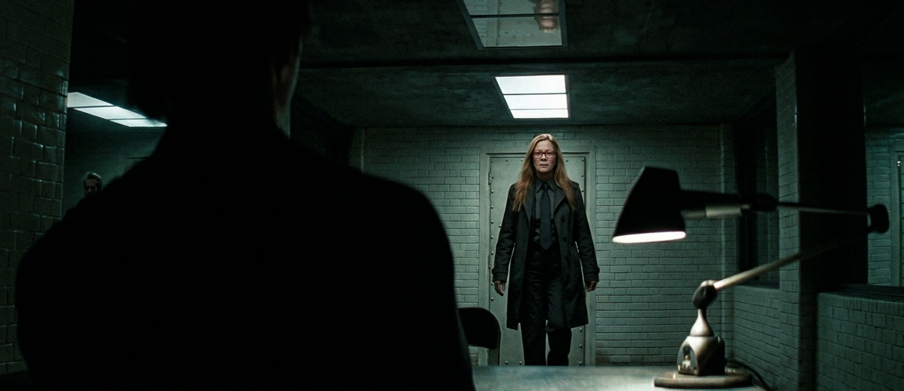
DK2_01 · gigi (5.0s)
Keyframe: dk2_shot01_end.jpg
Line: "One, two, three, eyes on me, Joker. Where is Harvey Dent? And why does it smell like burnt saffron in here?"
Prompt: Photorealistic 2008 35mm movie scene matching the starting frame. Inside the pitch-dark cyan-slate shadowed interrogation room under dim frosted ceiling glow and black desk lamp. Keep camera framing closely locked with only a subtle slow cinema dolly push-in and natural breathing. ONLY the 67-year-old woman with weathered skin, red-framed glasses, and strawberry-blonde hair wearing a dark charcoal GCPD trench coat in the center of frame actively speaks, moving his or her lips, mouth shapes, teeth, and jaw clearly and precisely in real-time lip synchronization with every syllable of the dialogue: "One, two, three, eyes on me, Joker. Where is Harvey Dent? And why does it smell like burnt saffron in here?" All other characters in the frame keep their mouths completely CLOSED and listen silently without speaking. Real human skin pores, authentic natural facial expressions, subtle 2008 35mm film grain. Maintain a stern, tense, dead-serious facial expression all the way through the final frame; close mouth cleanly when dialogue finishes — NEVER smile or grin.
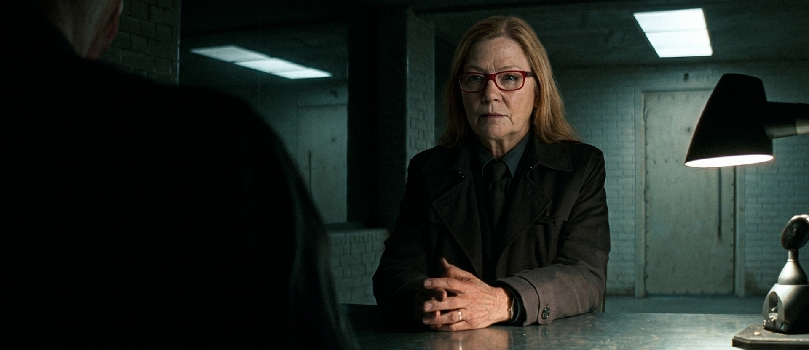
DK2_02 · gigi (5.0s)
Keyframe: dk2_shot02_start.jpg
Line: "I don't play games after recess, mister. Start talking before Batman steps through that door."
Prompt: Photorealistic 2008 35mm movie scene matching the starting frame. Inside the pitch-dark cyan-slate shadowed interrogation room under dim frosted ceiling glow and black desk lamp. Smoothly transition camera perspective and subtle body movement from the starting frame toward the ending keyframe's exact composition. ONLY the 67-year-old woman with weathered skin, red-framed glasses, and strawberry-blonde hair wearing a dark charcoal GCPD trench coat in the center of frame actively speaks, moving his or her lips, mouth shapes, teeth, and jaw clearly and precisely in real-time lip synchronization with every syllable of the dialogue: "I don't play games after recess, mister. Start talking before Batman steps through that door." All other characters in the frame keep their mouths completely CLOSED and listen silently without speaking. Real human skin pores, authentic natural facial expressions, subtle 2008 35mm film grain.
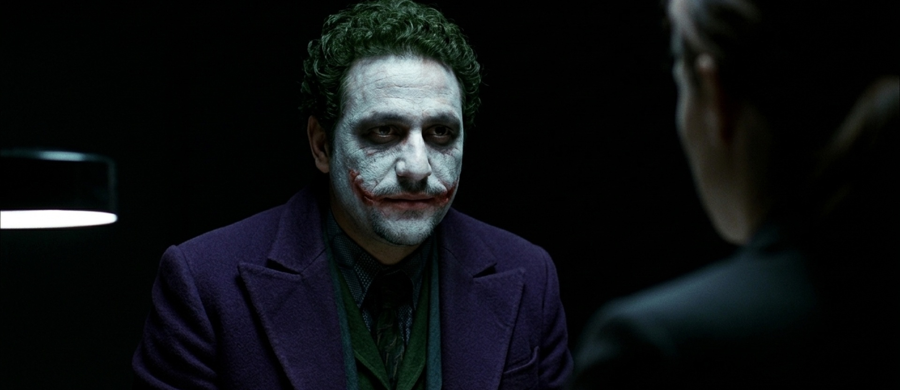
DK2_03 · hooman (5.0s)
Keyframe: dk2_shot03_start.jpg
Line: "Chay-chay-chetori, Commissioner! Nobody give Hooman coffee, nobody take fifty-fifty deal, huuuuh?"
Prompt: Photorealistic 2008 35mm movie scene matching the starting frame. Inside the pitch-dark cyan-slate shadowed interrogation room under dim frosted ceiling glow and black desk lamp. Smoothly transition camera perspective and subtle body movement from the starting frame toward the ending keyframe's exact composition. ONLY the man in flaky cracked white Joker greasepaint, blackened eye paint, smeared crimson mouth scars, shorter dark-green streaked curly hair, subtle dark mustache/goatee stubble under paint, and dark purple tailored coat over green vest in the center of frame actively speaks, moving his or her lips, mouth shapes, teeth, and jaw clearly and precisely in real-time lip synchronization with every syllable of the dialogue: "Chay-chay-chetori, Commissioner! Nobody give Hooman coffee, nobody take fifty-fifty deal, huuuuh?" All other characters in the frame keep their mouths completely CLOSED and listen silently without speaking. Real human skin pores, authentic natural facial expressions, subtle 2008 35mm film grain.
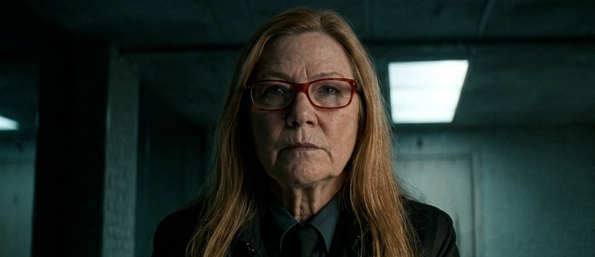
DK2_04 · gigi (5.0s)
Keyframe: dk2_shot04_start.jpg
Line: "Nobody is cutting a fifty-fifty real estate deal in Gotham Police. Hands flat on the steel table right now."
Prompt: Photorealistic 2008 35mm movie scene matching the starting frame. Inside the pitch-dark cyan-slate shadowed interrogation room under dim frosted ceiling glow and black desk lamp. Keep camera framing closely locked to the starting frame with natural subtle dolly breathing and genuine upper-body acting. ONLY the 67-year-old woman with weathered skin, red-framed glasses, and strawberry-blonde hair wearing a dark charcoal GCPD trench coat in the center of frame actively speaks, moving his or her lips, mouth shapes, teeth, and jaw clearly and precisely in real-time lip synchronization with every syllable of the dialogue: "Nobody is cutting a fifty-fifty real estate deal in Gotham Police. Hands flat on the steel table right now." All other characters in the frame keep their mouths completely CLOSED and listen silently without speaking. Real human skin pores, authentic natural facial expressions, subtle 2008 35mm film grain. Maintain a stern, tense, dead-serious facial expression all the way through the final frame; close mouth cleanly when dialogue finishes — NEVER smile or grin.
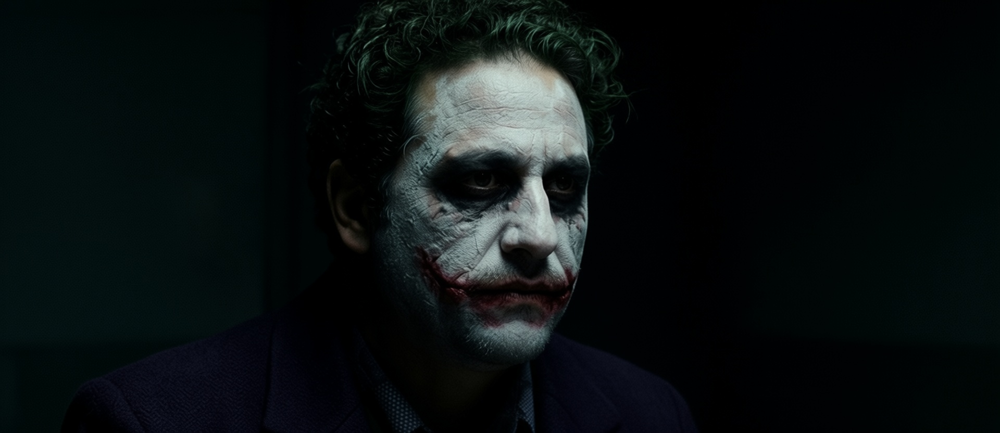
DK2_05 · hooman (5.0s)
Keyframe: dk2_shot05_start.jpg
Line: "Strict teacher routine very scary, dood! Call Zach, check Encino escrow before midnight!"
Prompt: Photorealistic 2008 35mm movie scene matching the starting frame. Inside the pitch-dark cyan-slate shadowed interrogation room under dim frosted ceiling glow and black desk lamp. Keep camera framing closely locked to the starting frame with natural subtle dolly breathing and genuine upper-body acting. ONLY the man with white theatrical face paint, dark eyes, and dark-green curly hair wearing a dark purple tailored coat over green vest in the center of frame actively and continuously speaks every single word from beginning to end, opening his mouth widely and clearly showing teeth, lips, and jaw articulation in tight real-time lip sync to the spoken audio track: "Strict teacher routine very scary, dood! Call Zach, check Encino escrow before midnight!" all the way through the last word — NEVER freezing into a silent grin or closed-mouth smirk while speaking. All other characters in the frame keep their mouths completely CLOSED and listen silently without speaking. Real human skin pores, authentic natural facial expressions, subtle 2008 35mm film grain.
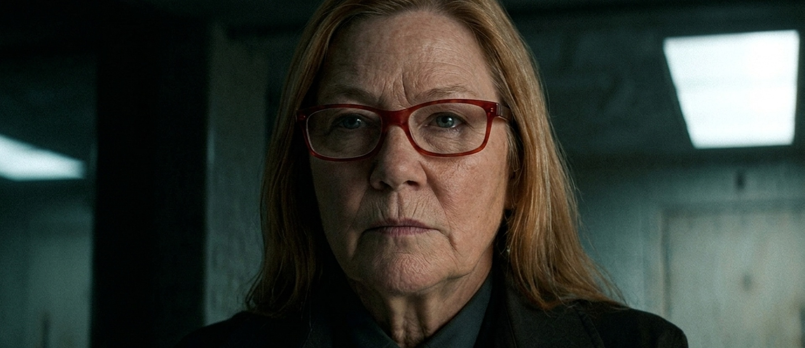
DK2_06 · gigi (5.0s)
Keyframe: dk2_shot06_start.jpg
Line: "Leave Zach out of this basement. Tell me where Harvey Dent is before I turn on the lights."
Prompt: Photorealistic 2008 35mm movie scene matching the starting frame. Inside the pitch-dark cyan-slate shadowed interrogation room under dim frosted ceiling glow and black desk lamp. Keep camera framing closely locked to the starting frame with natural subtle dolly breathing and genuine upper-body acting. ONLY the 67-year-old woman with weathered skin, red-framed glasses, and strawberry-blonde hair wearing a dark charcoal GCPD trench coat in the center of frame actively speaks, moving his or her lips, mouth shapes, teeth, and jaw clearly and precisely in real-time lip synchronization with every syllable of the dialogue: "Leave Zach out of this basement. Tell me where Harvey Dent is before I turn on the lights." All other characters in the frame keep their mouths completely CLOSED and listen silently without speaking. Real human skin pores, authentic natural facial expressions, subtle 2008 35mm film grain. Maintain a stern, tense, dead-serious facial expression all the way through the final frame; close mouth cleanly when dialogue finishes — NEVER smile or grin.
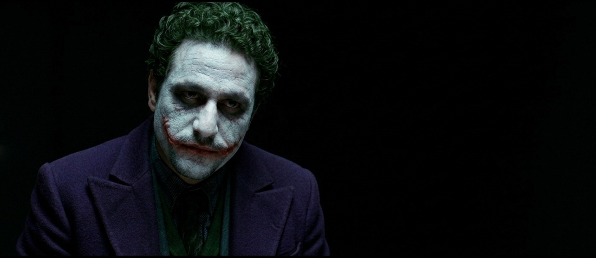
DK2_07 · hooman (5.0s)
Keyframe: dk2_shot07_start.jpg
Line: "Oh, Harvey in lovely Westside spot, dood! Zero HOA fee, tiny bit asbestos, no problem!"
Prompt: Photorealistic 2008 35mm movie scene matching the starting frame. Inside the pitch-dark cyan-slate shadowed interrogation room under dim frosted ceiling glow and black desk lamp. Keep camera framing closely locked to the starting frame with natural subtle dolly breathing and genuine upper-body acting. ONLY the man in flaky cracked white Joker greasepaint, blackened eye paint, smeared crimson mouth scars, shorter dark-green streaked curly hair, subtle dark mustache/goatee stubble under paint, and dark purple tailored coat over green vest in the center of frame actively speaks, moving his or her lips, mouth shapes, teeth, and jaw clearly and precisely in real-time lip synchronization with every syllable of the dialogue: "Oh, Harvey in lovely Westside spot, dood! Zero HOA fee, tiny bit asbestos, no problem!" All other characters in the frame keep their mouths completely CLOSED and listen silently without speaking. Real human skin pores, authentic natural facial expressions, subtle 2008 35mm film grain.
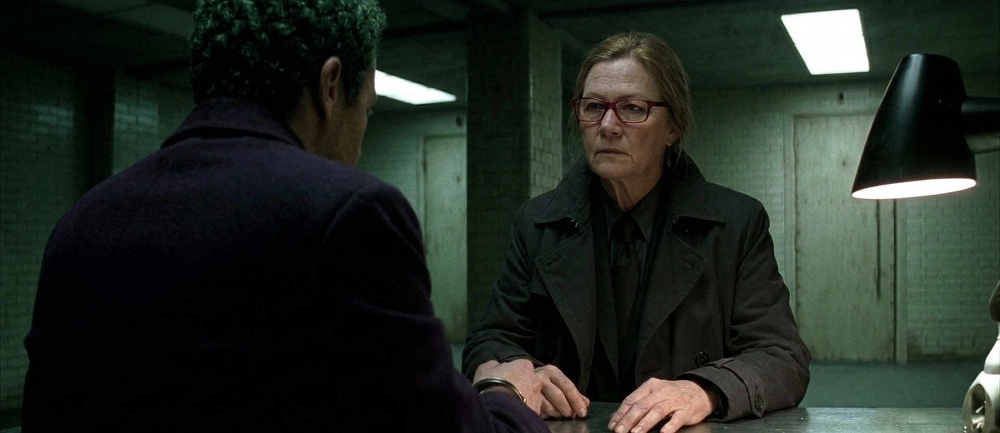
DK2_08 · gigi (5.0s)
Keyframe: dk2_shot08_start.jpg
Line: "Fine. You lost your green behavior star for the week. Let's see how you handle the night shift."
Prompt: Photorealistic 2008 35mm movie scene matching the starting frame. Inside the pitch-dark cyan-slate shadowed interrogation room under dim frosted ceiling glow and black desk lamp. Keep foreground out-of-focus purple shoulder steady on the left with only a subtle gentle slow dolly push-in toward the interrogation table. ONLY the 67-year-old woman with weathered skin, red-framed glasses, and strawberry-blonde hair wearing a dark charcoal GCPD trench coat on the right actively speaks, moving his or her lips, mouth shapes, teeth, and jaw clearly and precisely in real-time lip synchronization with every syllable of the dialogue: "Fine. You lost your green behavior star for the week. Let's see how you handle the night shift." All other characters in the frame keep their mouths completely CLOSED and listen silently without speaking. Real human skin pores, authentic natural facial expressions, subtle 2008 35mm film grain. Maintain a stern, tense, dead-serious facial expression all the way through the final frame; close mouth cleanly when dialogue finishes — NEVER smile or grin.
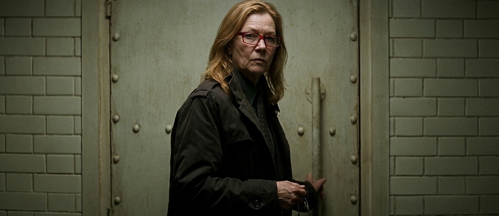
DK2_09 · gigi (5.0s)
Keyframe: dk2_shot09_start.jpg
Line: "Good luck explaining escrow to him, Hooman. The lights are coming on now."
Prompt: Photorealistic 2008 35mm movie scene matching the starting frame. Standing beside the heavy riveted steel interrogation door in moody overhead corridor spill. Smoothly transition camera perspective and subtle body movement from the starting frame toward the ending keyframe's exact composition. ONLY the 67-year-old woman with weathered skin, red-framed glasses, and strawberry-blonde hair wearing a dark charcoal GCPD trench coat in the center of frame actively speaks, moving his or her lips, mouth shapes, teeth, and jaw clearly and precisely in real-time lip synchronization with every syllable of the dialogue: "Good luck explaining escrow to him, Hooman. The lights are coming on now." All other characters in the frame keep their mouths completely CLOSED and listen silently without speaking. Real human skin pores, authentic natural facial expressions, subtle 2008 35mm film grain.
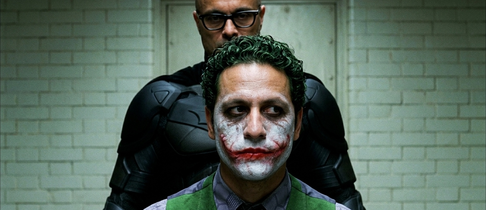
DK2_10 · hooman (5.0s)
Keyframe: dk2_shot10_start.jpg
Line: "Fuck that shit, Batman! Why you stand behind people in dark like Encino valet, dood?!"
Prompt: Photorealistic 2008 35mm movie scene matching the starting frame. Inside the blinding clinical fluorescent-lit interrogation room against pale greenish-beige painted cinderblocks and white painted brick. Keep camera framing closely locked to the starting frame with only subtle realistic cinema breathing and micro-movement. ONLY the coatless man in flaky cracked white Joker greasepaint, blackened eye paint, smeared crimson mouth scars, shorter dark-green streaked curly hair, subtle mustache/goatee stubble under paint, patterned grey-lavender dress shirt, and dark green waistcoat in the center of frame actively speaks, moving his or her lips, mouth shapes, teeth, and jaw clearly and precisely in real-time lip synchronization with every syllable of the dialogue: "Fuck that shit, Batman! Why you stand behind people in dark like Encino valet, dood?!" All other characters in the frame keep their mouths completely CLOSED and listen silently without speaking. Real human skin pores, authentic natural facial expressions, subtle 2008 35mm film grain.
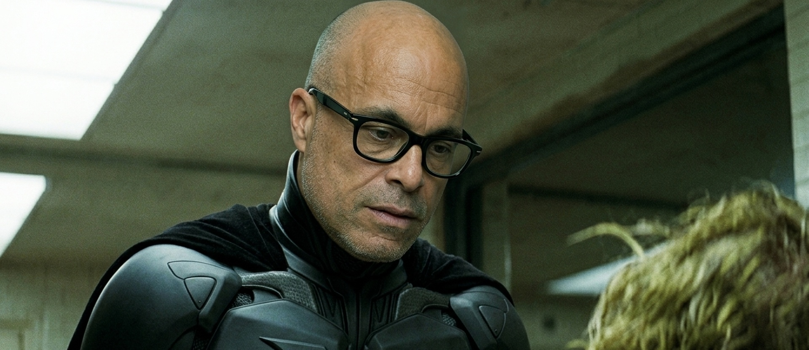
DK2_11 · damon (5.0s)
Keyframe: dk2_shot11_start.jpg
Line: "Where is Harvey Dent. And back up two inches—I'm fasting on cold Maurten hydrogels."
Prompt: Photorealistic 2008 35mm movie scene matching the starting frame. Inside the blinding clinical fluorescent-lit interrogation room against pale greenish-beige painted cinderblocks and white painted brick. Smoothly transition camera perspective and subtle body movement from the starting frame toward the ending keyframe's exact composition. ONLY the bald man with heavy black-framed glasses, tanned weathered skin pores, and salt-and-pepper stubble wearing matte-black armored Dark Knight Batsuit plates and black cape with NO mask cowl on the left actively speaks, moving his or her lips, mouth shapes, teeth, and jaw clearly and precisely in real-time lip synchronization with every syllable of the dialogue: "Where is Harvey Dent. And back up two inches—I'm fasting on cold Maurten hydrogels." All other characters in the frame keep their mouths completely CLOSED and listen silently without speaking. Real human skin pores, authentic natural facial expressions, subtle 2008 35mm film grain.
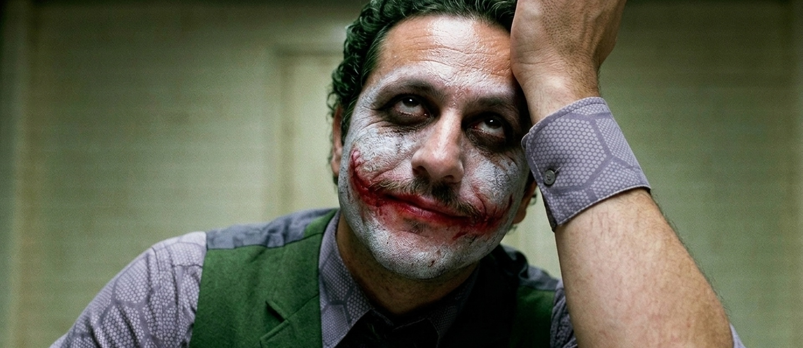
DK2_12 · hooman (5.0s)
Keyframe: dk2_shot12_start.jpg
Line: "Never start with the head, dood! You mess up hairline—you know Beverly Hills hair plug cost?"
Prompt: Photorealistic 2008 35mm movie scene matching the starting frame. Inside the blinding clinical fluorescent-lit interrogation room against pale greenish-beige painted cinderblocks and white painted brick. Keep camera framing closely locked to the starting frame with natural subtle dolly breathing and genuine upper-body acting. ONLY the coatless man with white theatrical face paint, dark eyes, and dark-green curly hair wearing a patterned grey-lavender dress shirt and dark green waistcoat in the center of frame actively and continuously speaks every single word from beginning to end, opening his mouth widely and clearly showing teeth, lips, and jaw articulation in tight real-time lip sync to the spoken audio track: "Never start with the head, dood! You mess up hairline—you know Beverly Hills hair plug cost?" all the way through the last word — NEVER freezing into a silent grin or closed-mouth smirk while speaking. All other characters in the frame keep their mouths completely CLOSED and listen silently without speaking. Real human skin pores, authentic natural facial expressions, subtle 2008 35mm film grain.
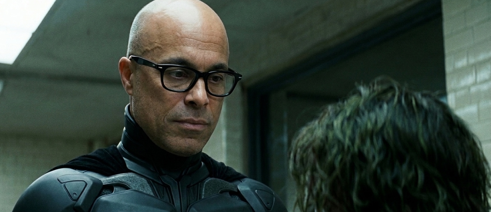
DK2_13 · damon (5.0s)
Keyframe: dk2_shot13_start.jpg
Line: "Don't test my patience, Hooman. I raced Lake Placid Aquabike in pouring rain on worse."
Prompt: Photorealistic 2008 35mm movie scene matching the starting frame. Inside the blinding clinical fluorescent-lit interrogation room against pale greenish-beige painted cinderblocks and white painted brick. Keep camera framing closely locked to the starting frame with natural subtle dolly breathing and genuine upper-body acting. ONLY the bald man with heavy black-framed glasses, tanned weathered skin pores, and salt-and-pepper stubble wearing matte-black armored Dark Knight Batsuit plates and black cape with NO mask cowl on the left actively speaks, moving his or her lips, mouth shapes, teeth, and jaw clearly and precisely in real-time lip synchronization with every syllable of the dialogue: "Don't test my patience, Hooman. I raced Lake Placid Aquabike in pouring rain on worse." All other characters in the frame keep their mouths completely CLOSED and listen silently without speaking. Real human skin pores, authentic natural facial expressions, subtle 2008 35mm film grain. Maintain a stern, tense, dead-serious facial expression all the way through the final frame; close mouth cleanly when dialogue finishes — NEVER smile or grin.
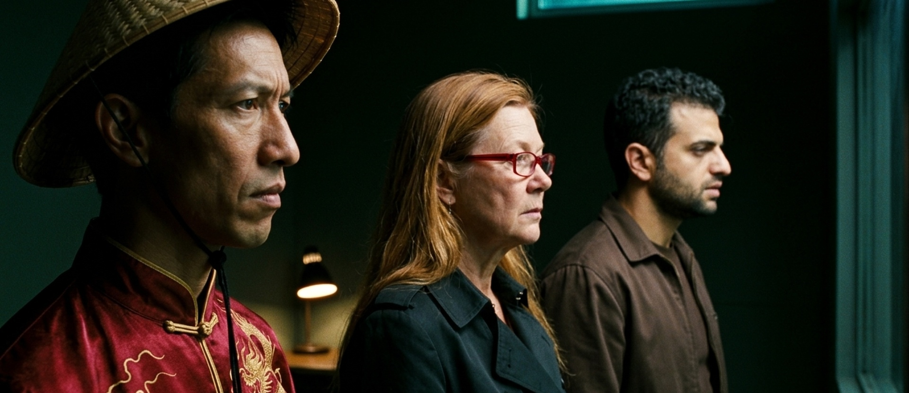
DK2_14 · deron (5.0s)
Keyframe: dk2_shot14_start.jpg
Line: "Aiya! Look at Damon shoulders so stiff lah! Somebody bring hot water and Po Chai Pill!"
Prompt: Photorealistic 2008 35mm movie scene matching the starting frame. Inside the dark green-shadowed police observation room behind the two-way mirrored glass. Smoothly transition camera perspective and subtle body movement from the starting frame toward the ending keyframe's exact composition. ONLY the East Asian detective wearing a woven bamboo conical hat and ornate red dragon silk robe over a GCPD vest on the left actively speaks, moving his or her lips, mouth shapes, teeth, and jaw clearly and precisely in real-time lip synchronization with every syllable of the dialogue: "Aiya! Look at Damon shoulders so stiff lah! Somebody bring hot water and Po Chai Pill!" All other characters in the frame keep their mouths completely CLOSED and listen silently without speaking. Real human skin pores, authentic natural facial expressions, subtle 2008 35mm film grain. Maintain a stern, tense, dead-serious facial expression all the way through the final frame; close mouth cleanly when dialogue finishes — NEVER smile or grin.
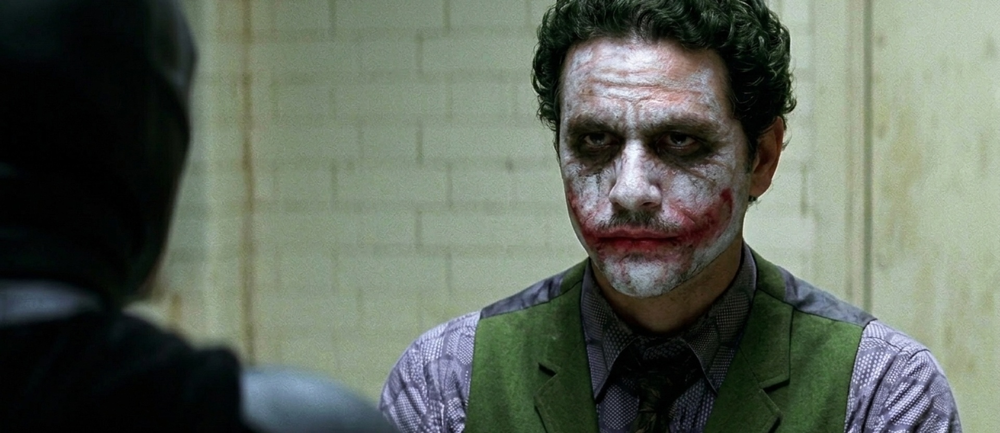
DK2_15 · hooman (5.0s)
Keyframe: dk2_shot15_start.jpg
Line: "Your friends behind mirror eating dumplings, baba! Tell Deron stop breathing on glass!"
Prompt: Photorealistic 2008 35mm movie scene matching the starting frame. Inside the blinding clinical fluorescent-lit interrogation room against pale greenish-beige painted cinderblocks and white painted brick. Keep camera framing closely locked to the starting frame with natural subtle dolly breathing and genuine upper-body acting. ONLY the coatless man in flaky cracked white Joker greasepaint, blackened eye paint, smeared crimson mouth scars, shorter dark-green streaked curly hair, subtle mustache/goatee stubble under paint, patterned grey-lavender dress shirt, and dark green waistcoat in the center of frame actively speaks, moving his or her lips, mouth shapes, teeth, and jaw clearly and precisely in real-time lip synchronization with every syllable of the dialogue: "Your friends behind mirror eating dumplings, baba! Tell Deron stop breathing on glass!" All other characters in the frame keep their mouths completely CLOSED and listen silently without speaking. Real human skin pores, authentic natural facial expressions, subtle 2008 35mm film grain.
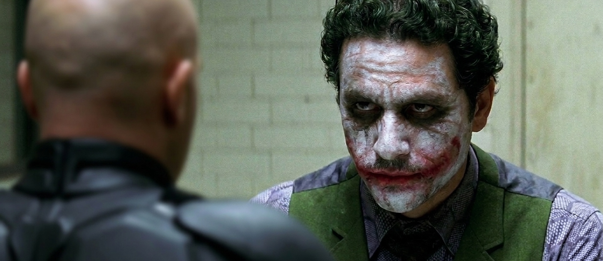
DK2_16 · hooman (5.0s)
Keyframe: dk2_shot16_start.jpg
Line: "Wait a second... why your voice sound like treadmill at Equinox, dood? You sweating inside rubber suit?"
Prompt: Photorealistic 2008 35mm movie scene matching the starting frame. Inside the blinding clinical fluorescent-lit interrogation room against pale greenish-beige painted cinderblocks and white painted brick. Keep camera framing closely locked to the starting frame with natural subtle dolly breathing and genuine upper-body acting. ONLY the coatless man in flaky cracked white Joker greasepaint, blackened eye paint, smeared crimson mouth scars, shorter dark-green streaked curly hair, subtle mustache/goatee stubble under paint, patterned grey-lavender dress shirt, and dark green waistcoat in the center of frame actively speaks, moving his or her lips, mouth shapes, teeth, and jaw clearly and precisely in real-time lip synchronization with every syllable of the dialogue: "Wait a second... why your voice sound like treadmill at Equinox, dood? You sweating inside rubber suit?" All other characters in the frame keep their mouths completely CLOSED and listen silently without speaking. Real human skin pores, authentic natural facial expressions, subtle 2008 35mm film grain.
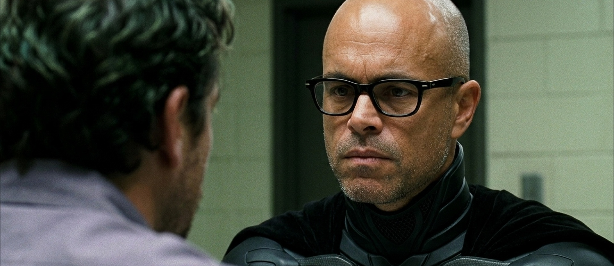
DK2_17 · damon (5.0s)
Keyframe: dk2_shot17_start.jpg
Line: "Word. It's a Zone-five core hold and I had bad shrimp. Now give me Harvey's address."
Prompt: Photorealistic 2008 35mm movie scene matching the starting frame. Inside the blinding clinical fluorescent-lit interrogation room against pale greenish-beige painted cinderblocks and white painted brick. Smoothly transition camera perspective and subtle body movement from the starting frame toward the ending keyframe's exact composition. ONLY the bald man with heavy black-framed glasses, tanned weathered skin pores, and salt-and-pepper stubble wearing matte-black armored Dark Knight Batsuit plates and black cape with NO mask cowl on the right actively speaks, moving his or her lips, mouth shapes, teeth, and jaw clearly and precisely in real-time lip synchronization with every syllable of the dialogue: "Word. It's a Zone-five core hold and I had bad shrimp. Now give me Harvey's address." All other characters in the frame keep their mouths completely CLOSED and listen silently without speaking. Real human skin pores, authentic natural facial expressions, subtle 2008 35mm film grain.
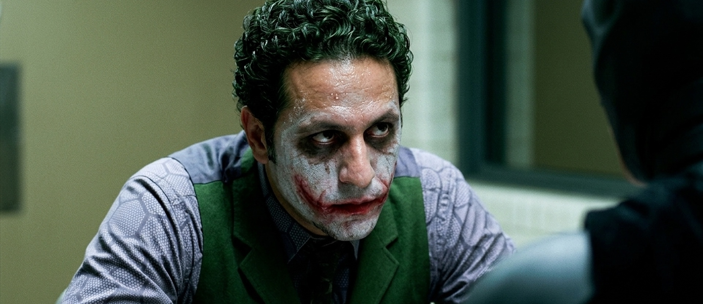
DK2_18 · hooman (5.0s)
Keyframe: dk2_shot18_end.jpg
Line: "Bad shrimp in neoprene suit? Brother, you need Magic Cone! Clean every pipe in one minute, dood!"
Prompt: Photorealistic 2008 35mm movie scene matching the starting frame. Inside the blinding clinical fluorescent-lit interrogation room against pale greenish-beige painted cinderblocks and white painted brick. Smoothly transition camera perspective and subtle body movement from the starting frame toward the ending keyframe's exact composition. ONLY the coatless man in flaky cracked white Joker greasepaint, blackened eye paint, smeared crimson mouth scars, shorter dark-green streaked curly hair, subtle mustache/goatee stubble under paint, patterned grey-lavender dress shirt, and dark green waistcoat on the left actively speaks, moving his or her lips, mouth shapes, teeth, and jaw clearly and precisely in real-time lip synchronization with every syllable of the dialogue: "Bad shrimp in neoprene suit? Brother, you need Magic Cone! Clean every pipe in one minute, dood!" All other characters in the frame keep their mouths completely CLOSED and listen silently without speaking. Real human skin pores, authentic natural facial expressions, subtle 2008 35mm film grain.
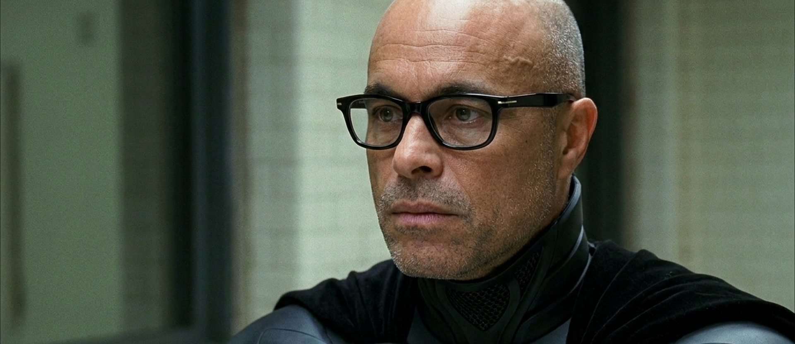
DK2_19 · damon (5.0s)
Keyframe: dk2_shot19_start.jpg
Line: "Keep your funnel out of my interrogation. You have ten seconds before I lose my grip."
Prompt: Photorealistic 2008 35mm movie scene matching the starting frame. Inside the blinding clinical fluorescent-lit interrogation room against pale greenish-beige painted cinderblocks and white painted brick. Keep camera framing closely locked to the starting frame with only subtle realistic cinema breathing and micro-movement. ONLY the bald man with heavy black-framed glasses, tanned weathered skin pores, and salt-and-pepper stubble wearing matte-black armored Dark Knight Batsuit plates and black cape with NO mask cowl on the right actively speaks, moving his or her lips, mouth shapes, teeth, and jaw clearly and precisely in real-time lip synchronization with every syllable of the dialogue: "Keep your funnel out of my interrogation. You have ten seconds before I lose my grip." All other characters in the frame keep their mouths completely CLOSED and listen silently without speaking. Real human skin pores, authentic natural facial expressions, subtle 2008 35mm film grain.
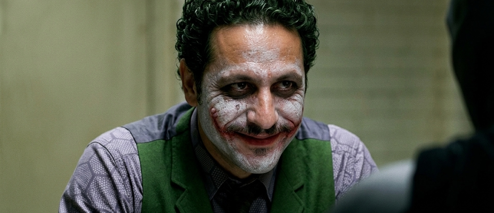
DK2_20 · hooman (5.0s)
Keyframe: dk2_shot20_start.jpg
Line: "Ooh! Big tough lawyer gonna lose grip! What you gonna do, sue me in Superior Court, huuuuh?"
Prompt: Photorealistic 2008 35mm movie scene matching the starting frame. Inside the blinding clinical fluorescent-lit interrogation room against pale greenish-beige painted cinderblocks and white painted brick. Keep camera framing closely locked to the starting frame with natural subtle dolly breathing and genuine upper-body acting. ONLY the coatless man in flaky cracked white Joker greasepaint, blackened eye paint, smeared crimson mouth scars, shorter dark-green streaked curly hair, subtle mustache/goatee stubble under paint, patterned grey-lavender dress shirt, and dark green waistcoat in the center of frame actively speaks, moving his or her lips, mouth shapes, teeth, and jaw clearly and precisely in real-time lip synchronization with every syllable of the dialogue: "Ooh! Big tough lawyer gonna lose grip! What you gonna do, sue me in Superior Court, huuuuh?" All other characters in the frame keep their mouths completely CLOSED and listen silently without speaking. Real human skin pores, authentic natural facial expressions, subtle 2008 35mm film grain.
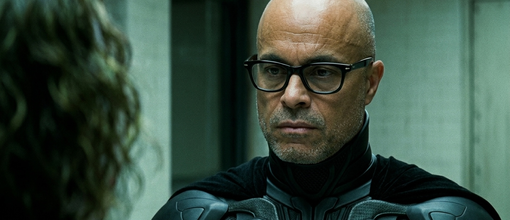
DK2_21 · damon (5.0s)
Keyframe: dk2_shot21_start.jpg
Line: "I survived L.A. County jail—jail, never prison. You don't rattle me. Where are they?"
Prompt: Photorealistic 2008 35mm movie scene matching the starting frame. Inside the blinding clinical fluorescent-lit interrogation room against pale greenish-beige painted cinderblocks and white painted brick. Smoothly transition camera perspective and subtle body movement from the starting frame toward the ending keyframe's exact composition. ONLY the bald man with heavy black-framed glasses, tanned weathered skin pores, and salt-and-pepper stubble wearing matte-black armored Dark Knight Batsuit plates and black cape with NO mask cowl on the right actively speaks, moving his or her lips, mouth shapes, teeth, and jaw clearly and precisely in real-time lip synchronization with every syllable of the dialogue: "I survived L.A. County jail—jail, never prison. You don't rattle me. Where are they?" All other characters in the frame keep their mouths completely CLOSED and listen silently without speaking. Real human skin pores, authentic natural facial expressions, subtle 2008 35mm film grain. Maintain a stern, tense, dead-serious facial expression all the way through the final frame; close mouth cleanly when dialogue finishes — NEVER smile or grin.
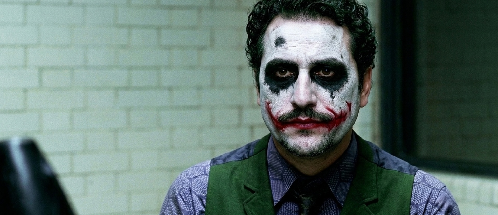
DK2_22 · hooman (5.0s)
Keyframe: dk2_shot22_start.jpg
Line: "Listen, baby—jail good for character! Tell Darren let's go fifty-fifty on Arkham parking structure!"
Prompt: Photorealistic 2008 35mm movie scene matching the starting frame. Inside the blinding clinical fluorescent-lit interrogation room against pale greenish-beige painted cinderblocks and white painted brick. Keep camera framing closely locked to the starting frame with natural subtle dolly breathing and genuine upper-body acting. ONLY the coatless man in flaky cracked white Joker greasepaint, blackened eye paint, smeared crimson mouth scars, shorter dark-green streaked curly hair, subtle mustache/goatee stubble under paint, patterned grey-lavender dress shirt, and dark green waistcoat in the center of frame actively speaks, moving his or her lips, mouth shapes, teeth, and jaw clearly and precisely in real-time lip synchronization with every syllable of the dialogue: "Listen, baby—jail good for character! Tell Darren let's go fifty-fifty on Arkham parking structure!" All other characters in the frame keep their mouths completely CLOSED and listen silently without speaking. Real human skin pores, authentic natural facial expressions, subtle 2008 35mm film grain.
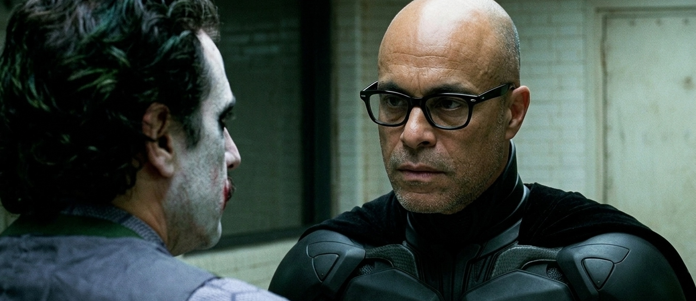
DK2_23 · damon (5.0s)
Keyframe: dk2_shot23_start.jpg
Line: "Enough with Darren. Their clock is running out right now. Which warehouse?"
Prompt: Photorealistic 2008 35mm movie scene matching the starting frame. Inside the blinding clinical fluorescent-lit interrogation room against pale greenish-beige painted cinderblocks and white painted brick. Keep camera framing closely locked to the starting frame with only subtle realistic cinema breathing and micro-movement. ONLY the bald man with heavy black-framed glasses, tanned weathered skin pores, and salt-and-pepper stubble wearing matte-black armored Dark Knight Batsuit plates and black cape with NO mask cowl on the right actively speaks, moving his or her lips, mouth shapes, teeth, and jaw clearly and precisely in real-time lip synchronization with every syllable of the dialogue: "Enough with Darren. Their clock is running out right now. Which warehouse?" All other characters in the frame keep their mouths completely CLOSED and listen silently without speaking. Real human skin pores, authentic natural facial expressions, subtle 2008 35mm film grain. Maintain a stern, tense, dead-serious facial expression all the way through the final frame; close mouth cleanly when dialogue finishes — NEVER smile or grin.
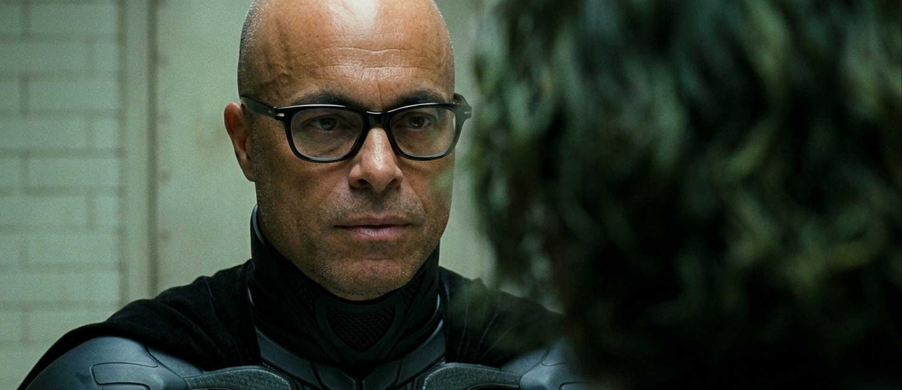
DK2_24 · damon (5.0s)
Keyframe: dk2_shot24_start.jpg
Line: "Every second you stall, my stomach gets worse and your face hits this table harder."
Prompt: Photorealistic 2008 35mm movie scene matching the starting frame. Inside the blinding clinical fluorescent-lit interrogation room against pale greenish-beige painted cinderblocks and white painted brick. Smoothly transition camera perspective and subtle body movement from the starting frame toward the ending keyframe's exact composition. ONLY the bald man with heavy black-framed glasses, tanned weathered skin pores, and salt-and-pepper stubble wearing matte-black armored Dark Knight Batsuit plates and black cape with NO mask cowl in the center of frame actively speaks, moving his or her lips, mouth shapes, teeth, and jaw clearly and precisely in real-time lip synchronization with every syllable of the dialogue: "Every second you stall, my stomach gets worse and your face hits this table harder." All other characters in the frame keep their mouths completely CLOSED and listen silently without speaking. Real human skin pores, authentic natural facial expressions, subtle 2008 35mm film grain. Maintain a stern, tense, dead-serious facial expression all the way through the final frame; close mouth cleanly when dialogue finishes — NEVER smile or grin.
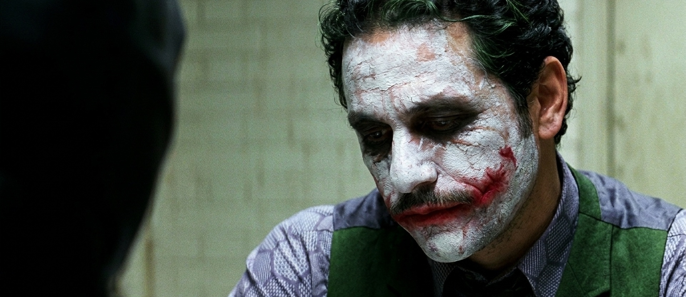
DK2_25 · hooman (5.0s)
Keyframe: dk2_shot25_start.jpg
Line: "See, madness like Encino brunch line, dood! All it takes is one bad burrito and little push!"
Prompt: Photorealistic 2008 35mm movie scene matching the starting frame. Inside the blinding clinical fluorescent-lit interrogation room against pale greenish-beige painted cinderblocks and white painted brick. Keep camera framing closely locked to the starting frame with natural subtle dolly breathing and genuine upper-body acting. ONLY the coatless man in flaky cracked white Joker greasepaint, blackened eye paint, smeared crimson mouth scars, shorter dark-green streaked curly hair, subtle mustache/goatee stubble under paint, patterned grey-lavender dress shirt, and dark green waistcoat in the center of frame actively speaks, moving his or her lips, mouth shapes, teeth, and jaw clearly and precisely in real-time lip synchronization with every syllable of the dialogue: "See, madness like Encino brunch line, dood! All it takes is one bad burrito and little push!" All other characters in the frame keep their mouths completely CLOSED and listen silently without speaking. Real human skin pores, authentic natural facial expressions, subtle 2008 35mm film grain.
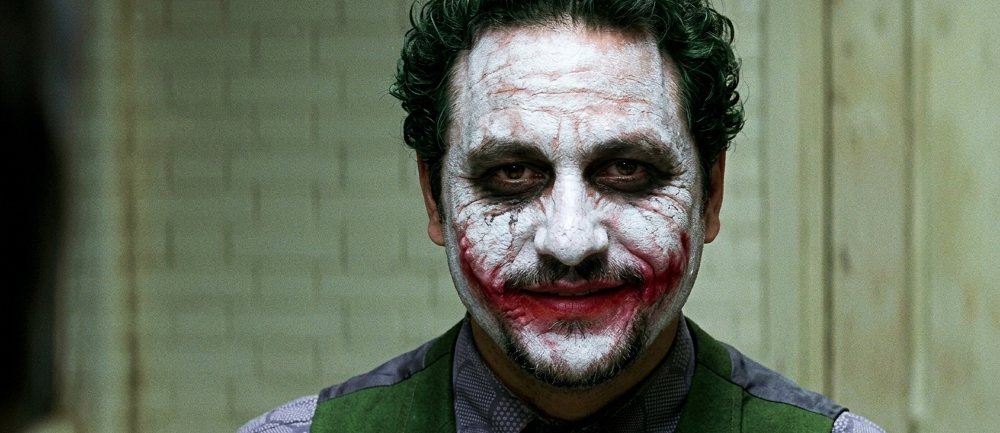
DK2_26 · hooman (5.0s)
Keyframe: dk2_shot26_start.jpg
Line: "Plus you have choice tonight, my friend... Harvey on Tenth Street, or Rachel eating warm guacamole!"
Prompt: Photorealistic 2008 35mm movie scene matching the starting frame. Inside the blinding clinical fluorescent-lit interrogation room against pale greenish-beige painted cinderblocks and white painted brick. Keep camera framing closely locked to the starting frame with natural subtle dolly breathing and genuine upper-body acting. ONLY the coatless man in flaky cracked white Joker greasepaint, blackened eye paint, smeared crimson mouth scars, shorter dark-green streaked curly hair, subtle mustache/goatee stubble under paint, patterned grey-lavender dress shirt, and dark green waistcoat in the center of frame actively speaks, moving his or her lips, mouth shapes, teeth, and jaw clearly and precisely in real-time lip synchronization with every syllable of the dialogue: "Plus you have choice tonight, my friend... Harvey on Tenth Street, or Rachel eating warm guacamole!" All other characters in the frame keep their mouths completely CLOSED and listen silently without speaking. Real human skin pores, authentic natural facial expressions, subtle 2008 35mm film grain.
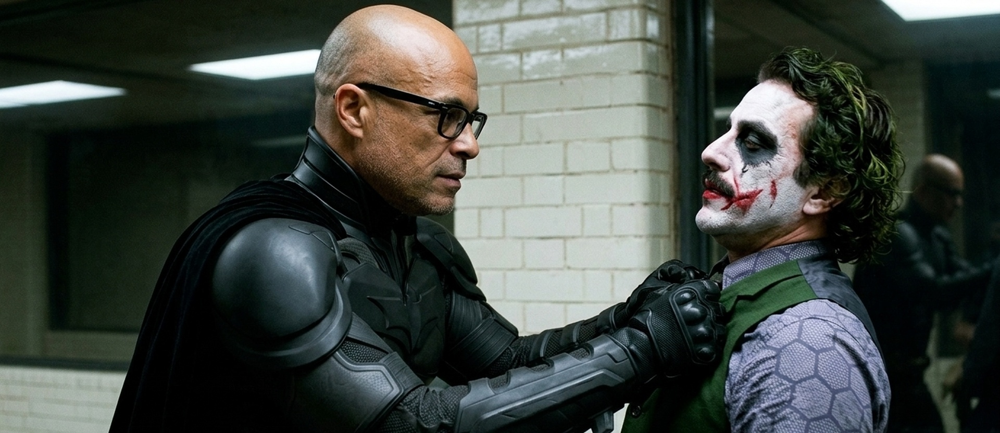
DK2_27 · damon (5.0s)
Keyframe: dk2_shot27_start.jpg
Line: "Tell me which one is where! Right now, Hooman!"
Prompt: Photorealistic 2008 35mm movie scene matching the starting frame. Inside the blinding clinical fluorescent-lit interrogation room against pale greenish-beige painted cinderblocks and white painted brick. Smoothly transition camera perspective and subtle body movement from the starting frame toward the ending keyframe's exact composition. ONLY the bald man with heavy black-framed glasses, tanned weathered skin pores, and salt-and-pepper stubble wearing matte-black armored Dark Knight Batsuit plates and black cape with NO mask cowl on the left actively speaks, moving his or her lips, mouth shapes, teeth, and jaw clearly and precisely in real-time lip synchronization with every syllable of the dialogue: "Tell me which one is where! Right now, Hooman!" All other characters in the frame keep their mouths completely CLOSED and listen silently without speaking. Real human skin pores, authentic natural facial expressions, subtle 2008 35mm film grain. Maintain a stern, tense, dead-serious facial expression all the way through the final frame; close mouth cleanly when dialogue finishes — NEVER smile or grin.
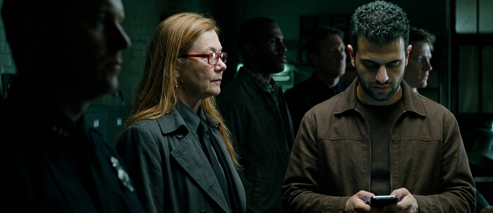
DK2_28 · zach (5.0s)
Keyframe: dk2_shot28_start.jpg
Line: "OMG, wait—ChatGPT says throwing people into cinderblock walls spikes cortisol like crazy, literally lol!"
Prompt: Photorealistic 2008 35mm movie scene matching the starting frame. Inside the dark green-shadowed police observation room behind the two-way mirrored glass. Keep camera framing closely locked to the starting frame with only subtle realistic cinema breathing and micro-movement. ONLY the curly-haired bearded tech officer in dark-framed glasses and a brown jacket on the right actively speaks, moving his or her lips, mouth shapes, teeth, and jaw clearly and precisely in real-time lip synchronization with every syllable of the dialogue: "OMG, wait—ChatGPT says throwing people into cinderblock walls spikes cortisol like crazy, literally lol!" All other characters in the frame keep their mouths completely CLOSED and listen silently without speaking. Real human skin pores, authentic natural facial expressions, subtle 2008 35mm film grain. Maintain a stern, tense, dead-serious facial expression all the way through the final frame; close mouth cleanly when dialogue finishes — NEVER smile or grin.
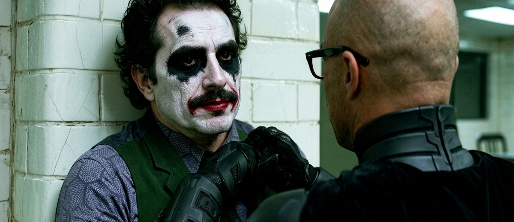
DK2_29 · hooman (5.0s)
Keyframe: dk2_shot29_start.jpg
Line: "Ask Elon, dood! He already quote-tweeted Rachel address on X with blue check, huuuuh?!"
Prompt: Photorealistic 2008 35mm movie scene matching the starting frame. Inside the blinding clinical fluorescent-lit interrogation room against pale greenish-beige painted cinderblocks and white painted brick. Smoothly transition camera perspective and subtle body movement from the starting frame toward the ending keyframe's exact composition. ONLY the coatless man in flaky cracked white Joker greasepaint, blackened eye paint, smeared crimson mouth scars, shorter dark-green streaked curly hair, subtle mustache/goatee stubble under paint, patterned grey-lavender dress shirt, and dark green waistcoat on the left actively speaks, moving his or her lips, mouth shapes, teeth, and jaw clearly and precisely in real-time lip synchronization with every syllable of the dialogue: "Ask Elon, dood! He already quote-tweeted Rachel address on X with blue check, huuuuh?!" All other characters in the frame keep their mouths completely CLOSED and listen silently without speaking. Real human skin pores, authentic natural facial expressions, subtle 2008 35mm film grain.
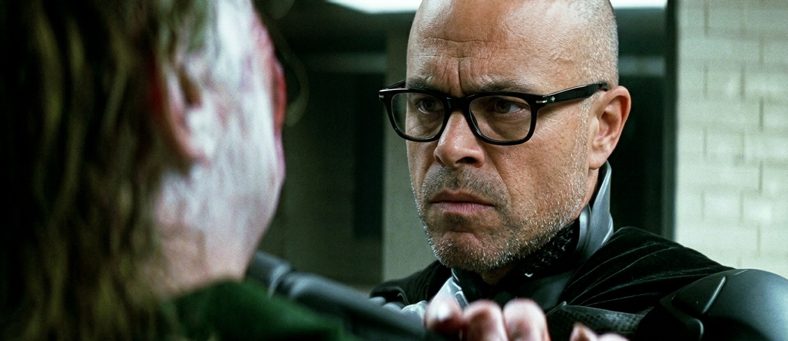
DK2_30 · damon (5.0s)
Keyframe: dk2_shot30_start.jpg
Line: "Shut up about X. Give me both street names before I tear this wall down."
Prompt: Photorealistic 2008 35mm movie scene matching the starting frame. Inside the blinding clinical fluorescent-lit interrogation room against pale greenish-beige painted cinderblocks and white painted brick. Smoothly transition camera perspective and subtle body movement from the starting frame toward the ending keyframe's exact composition. ONLY the bald man with heavy black-framed glasses, tanned weathered skin pores, and salt-and-pepper stubble wearing matte-black armored Dark Knight Batsuit plates and black cape with NO mask cowl on the right actively speaks, moving his or her lips, mouth shapes, teeth, and jaw clearly and precisely in real-time lip synchronization with every syllable of the dialogue: "Shut up about X. Give me both street names before I tear this wall down." All other characters in the frame keep their mouths completely CLOSED and listen silently without speaking. Real human skin pores, authentic natural facial expressions, subtle 2008 35mm film grain. Maintain a stern, tense, dead-serious facial expression all the way through the final frame; close mouth cleanly when dialogue finishes — NEVER smile or grin.
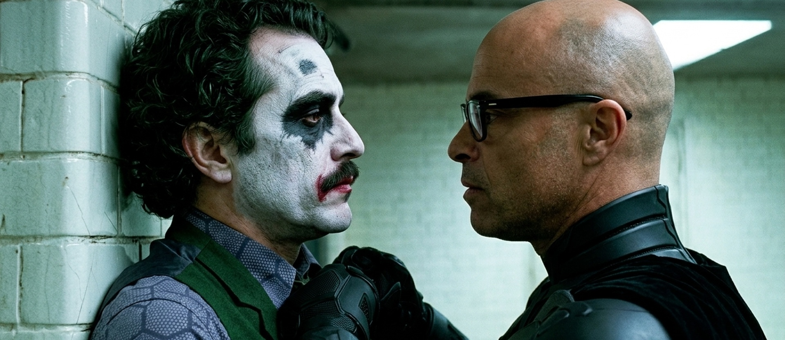
DK2_31 · hooman (5.0s)
Keyframe: dk2_shot31_start.jpg
Line: "Careful baby, you wrinkle tailored shirt! Harvey at Two-Fifty Fifty-Second, Rachel at Cicero dock!"
Prompt: Photorealistic 2008 35mm movie scene matching the starting frame. Inside the blinding clinical fluorescent-lit interrogation room against pale greenish-beige painted cinderblocks and white painted brick. Smoothly transition camera perspective and subtle body movement from the starting frame toward the ending keyframe's exact composition. ONLY the coatless man in flaky cracked white Joker greasepaint, blackened eye paint, smeared crimson mouth scars, shorter dark-green streaked curly hair, subtle mustache/goatee stubble under paint, patterned grey-lavender dress shirt, and dark green waistcoat on the left actively speaks, moving his or her lips, mouth shapes, teeth, and jaw clearly and precisely in real-time lip synchronization with every syllable of the dialogue: "Careful baby, you wrinkle tailored shirt! Harvey at Two-Fifty Fifty-Second, Rachel at Cicero dock!" All other characters in the frame keep their mouths completely CLOSED and listen silently without speaking. Real human skin pores, authentic natural facial expressions, subtle 2008 35mm film grain.
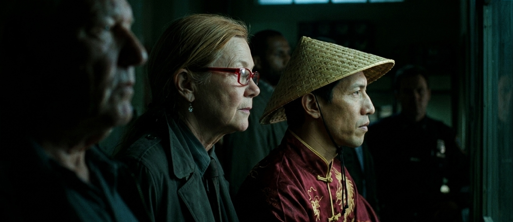
DK2_32 · gigi (5.0s)
Keyframe: dk2_shot32_start.jpg
Line: "Did that clown just brag about Elon Musk on police CCTV?! Breach that door immediately!"
Prompt: Photorealistic 2008 35mm movie scene matching the starting frame. Inside the dark green-shadowed police observation room behind the two-way mirrored glass. Keep camera framing closely locked to the starting frame with only subtle realistic cinema breathing and micro-movement. ONLY the 67-year-old woman with weathered skin, red-framed glasses, and strawberry-blonde hair wearing a dark charcoal GCPD trench coat on the left actively speaks, moving his or her lips, mouth shapes, teeth, and jaw clearly and precisely in real-time lip synchronization with every syllable of the dialogue: "Did that clown just brag about Elon Musk on police CCTV?! Breach that door immediately!" All other characters in the frame keep their mouths completely CLOSED and listen silently without speaking. Real human skin pores, authentic natural facial expressions, subtle 2008 35mm film grain. Maintain a stern, tense, dead-serious facial expression all the way through the final frame; close mouth cleanly when dialogue finishes — NEVER smile or grin.
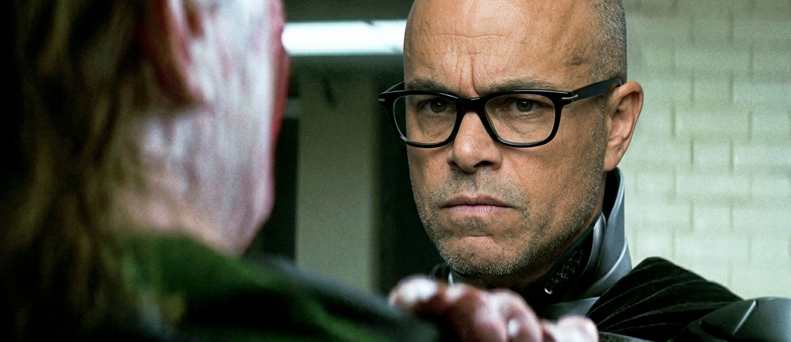
DK2_33 · damon (5.0s)
Keyframe: dk2_shot33_start.jpg
Line: "I'm going for Rachel. Stay right where you are."
Prompt: Photorealistic 2008 35mm movie scene matching the starting frame. Inside the blinding clinical fluorescent-lit interrogation room against pale greenish-beige painted cinderblocks and white painted brick. Keep camera framing closely locked to the starting frame with only subtle realistic cinema breathing and micro-movement. ONLY the bald man with heavy black-framed glasses, tanned weathered skin pores, and salt-and-pepper stubble wearing matte-black armored Dark Knight Batsuit plates and black cape with NO mask cowl on the right actively speaks, moving his or her lips, mouth shapes, teeth, and jaw clearly and precisely in real-time lip synchronization with every syllable of the dialogue: "I'm going for Rachel. Stay right where you are." All other characters in the frame keep their mouths completely CLOSED and listen silently without speaking. Real human skin pores, authentic natural facial expressions, subtle 2008 35mm film grain. Maintain a stern, tense, dead-serious facial expression all the way through the final frame; close mouth cleanly when dialogue finishes — NEVER smile or grin.
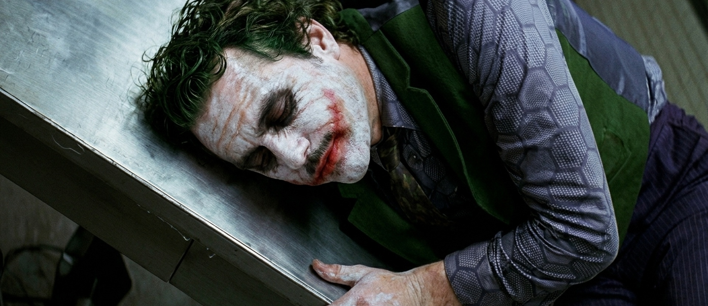
DK2_34 · hooman (5.0s)
Keyframe: dk2_shot34_start.jpg
Line: "Hahaha! Don't forget stop at Sherman Oaks valet on way! And grab toilet paper, dood!"
Prompt: Photorealistic 2008 35mm movie scene matching the starting frame. Inside the blinding clinical fluorescent-lit interrogation room against pale greenish-beige painted cinderblocks and white painted brick. Keep camera framing closely locked to the starting frame with only subtle realistic cinema breathing and micro-movement. ONLY the coatless man in flaky cracked white Joker greasepaint, blackened eye paint, smeared crimson mouth scars, shorter dark-green streaked curly hair, subtle mustache/goatee stubble under paint, patterned grey-lavender dress shirt, and dark green waistcoat in the center of frame actively speaks, moving his or her lips, mouth shapes, teeth, and jaw clearly and precisely in real-time lip synchronization with every syllable of the dialogue: "Hahaha! Don't forget stop at Sherman Oaks valet on way! And grab toilet paper, dood!" All other characters in the frame keep their mouths completely CLOSED and listen silently without speaking. Real human skin pores, authentic natural facial expressions, subtle 2008 35mm film grain.
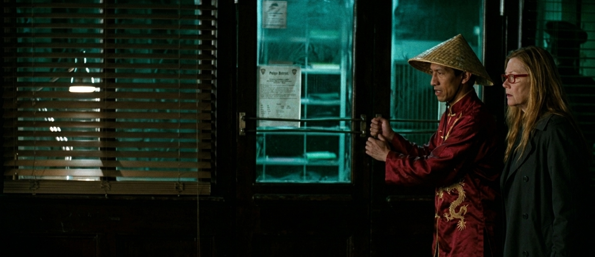
DK2_35 · deron (5.0s)
Keyframe: dk2_shot35_start.jpg
Line: "Aiya! Why Batman wedge cheap folding chair under doorknob lah?! Worse security than Clippers bench!"
Prompt: Photorealistic 2008 35mm movie scene matching the starting frame. In the dim dark precinct hallway outside the frosted glass interrogation door. Keep camera framing closely locked to the starting frame with only subtle realistic cinema breathing and micro-movement. ONLY the East Asian detective wearing a woven bamboo conical hat and ornate red dragon silk robe over a GCPD vest on the right actively speaks, moving his or her lips, mouth shapes, teeth, and jaw clearly and precisely in real-time lip synchronization with every syllable of the dialogue: "Aiya! Why Batman wedge cheap folding chair under doorknob lah?! Worse security than Clippers bench!" All other characters in the frame keep their mouths completely CLOSED and listen silently without speaking. Real human skin pores, authentic natural facial expressions, subtle 2008 35mm film grain. Maintain a stern, tense, dead-serious facial expression all the way through the final frame; close mouth cleanly when dialogue finishes — NEVER smile or grin.
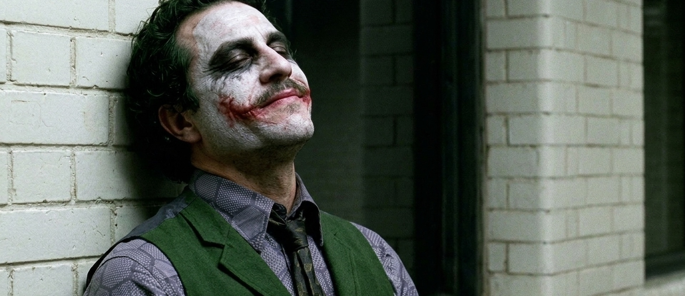
DK2_36 · hooman (5.0s)
Keyframe: dk2_shot36_start.jpg
Line: "You see, Damon, their rules drop like old fiber bar! Look at them banging door outside!"
Prompt: Photorealistic 2008 35mm movie scene matching the starting frame. Inside the blinding clinical fluorescent-lit interrogation room against pale greenish-beige painted cinderblocks and white painted brick. Keep camera framing closely locked to the starting frame with natural subtle dolly breathing and genuine upper-body acting. ONLY the coatless man in flaky cracked white Joker greasepaint, blackened eye paint, smeared crimson mouth scars, shorter dark-green streaked curly hair, subtle mustache/goatee stubble under paint, patterned grey-lavender dress shirt, and dark green waistcoat in the center of frame actively speaks, moving his or her lips, mouth shapes, teeth, and jaw clearly and precisely in real-time lip synchronization with every syllable of the dialogue: "You see, Damon, their rules drop like old fiber bar! Look at them banging door outside!" All other characters in the frame keep their mouths completely CLOSED and listen silently without speaking. Real human skin pores, authentic natural facial expressions, subtle 2008 35mm film grain.
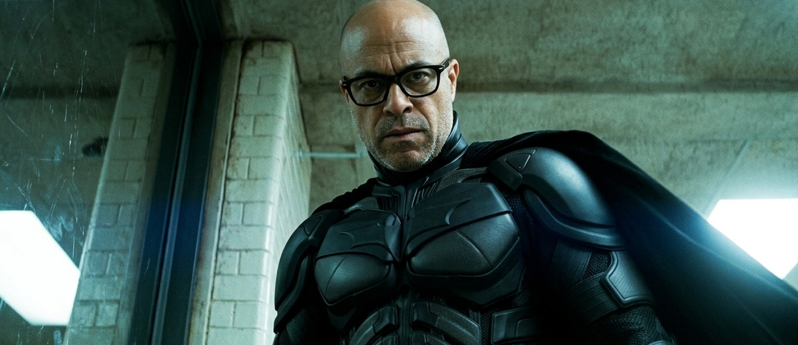
DK2_37 · damon (5.0s)
Keyframe: dk2_shot37_start.jpg
Line: "You think any of this is funny? My glucose hit two hundred and I still run faster than them."
Prompt: Photorealistic 2008 35mm movie scene matching the starting frame. Inside the blinding clinical fluorescent-lit interrogation room against pale greenish-beige painted cinderblocks and white painted brick. Smoothly transition camera perspective and subtle body movement from the starting frame toward the ending keyframe's exact composition. ONLY the bald man with heavy black-framed glasses, tanned weathered skin pores, and salt-and-pepper stubble wearing matte-black armored Dark Knight Batsuit plates and black cape with NO mask cowl in the center of frame actively speaks, moving his or her lips, mouth shapes, teeth, and jaw clearly and precisely in real-time lip synchronization with every syllable of the dialogue: "You think any of this is funny? My glucose hit two hundred and I still run faster than them." All other characters in the frame keep their mouths completely CLOSED and listen silently without speaking. Real human skin pores, authentic natural facial expressions, subtle 2008 35mm film grain. Maintain a stern, tense, dead-serious facial expression all the way through the final frame; close mouth cleanly when dialogue finishes — NEVER smile or grin.
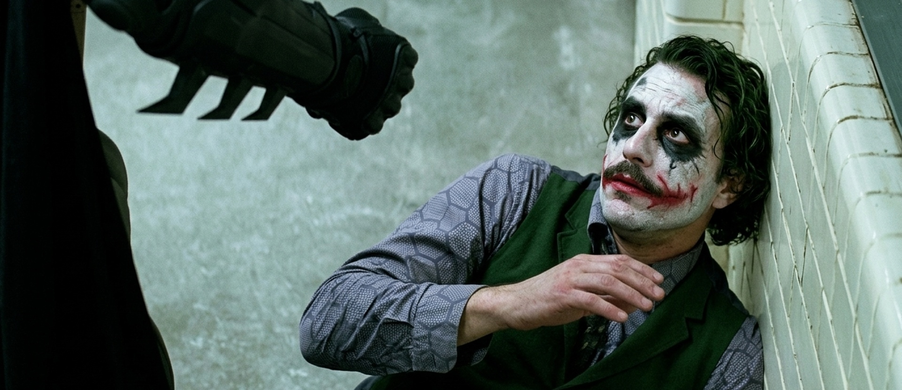
DK2_38 · hooman (5.0s)
Keyframe: dk2_shot38_start.jpg
Line: "Hahaha! Nobody got anything to threaten Hooman with! Wait—tell Zach buy Magic Cone stock!"
Prompt: Photorealistic 2008 35mm movie scene matching the starting frame. Inside the blinding clinical fluorescent-lit interrogation room against pale greenish-beige painted cinderblocks and white painted brick. Smoothly transition camera perspective and subtle body movement from the starting frame toward the ending keyframe's exact composition. ONLY the coatless man in flaky cracked white Joker greasepaint, blackened eye paint, smeared crimson mouth scars, shorter dark-green streaked curly hair, subtle mustache/goatee stubble under paint, patterned grey-lavender dress shirt, and dark green waistcoat in the center of frame actively speaks, moving his or her lips, mouth shapes, teeth, and jaw clearly and precisely in real-time lip synchronization with every syllable of the dialogue: "Hahaha! Nobody got anything to threaten Hooman with! Wait—tell Zach buy Magic Cone stock!" All other characters in the frame keep their mouths completely CLOSED and listen silently without speaking. Real human skin pores, authentic natural facial expressions, subtle 2008 35mm film grain.
DK2_39 · damon (5.0s)
Keyframe: dk2_shot39_start.jpg
Line: "I'm done talking. Enjoy solitary and stale meatloaf."
Prompt: Photorealistic 2008 35mm movie scene matching the starting frame. Inside the blinding clinical fluorescent-lit interrogation room against pale greenish-beige painted cinderblocks and white painted brick. Keep camera framing closely locked to the starting frame with only subtle realistic cinema breathing and micro-movement. ONLY the bald man with heavy black-framed glasses, tanned weathered skin pores, and salt-and-pepper stubble wearing matte-black armored Dark Knight Batsuit plates and black cape with NO mask cowl in the center of frame actively speaks, moving his or her lips, mouth shapes, teeth, and jaw clearly and precisely in real-time lip synchronization with every syllable of the dialogue: "I'm done talking. Enjoy solitary and stale meatloaf." All other characters in the frame keep their mouths completely CLOSED and listen silently without speaking. Real human skin pores, authentic natural facial expressions, subtle 2008 35mm film grain. Maintain a stern, tense, dead-serious facial expression all the way through the final frame; close mouth cleanly when dialogue finishes — NEVER smile or grin.
DK2_40 · hooman (5.0s)
Keyframe: dk2_shot40_start.jpg
Line: "Don't leave so angry, baby! You complete Hooman... call Darren when bathroom break finish, huuuuh?"
Prompt: Photorealistic 2008 35mm movie scene matching the starting frame. Inside the blinding clinical fluorescent-lit interrogation room against pale greenish-beige painted cinderblocks and white painted brick. Keep camera framing closely locked to the starting frame with natural subtle dolly breathing and genuine upper-body acting. ONLY the coatless man in flaky cracked white Joker greasepaint, blackened eye paint, smeared crimson mouth scars, shorter dark-green streaked curly hair, subtle mustache/goatee stubble under paint, patterned grey-lavender dress shirt, and dark green waistcoat in the center of frame actively speaks, moving his or her lips, mouth shapes, teeth, and jaw clearly and precisely in real-time lip synchronization with every syllable of the dialogue: "Don't leave so angry, baby! You complete Hooman... call Darren when bathroom break finish, huuuuh?" All other characters in the frame keep their mouths completely CLOSED and listen silently without speaking. Real human skin pores, authentic natural facial expressions, subtle 2008 35mm film grain.